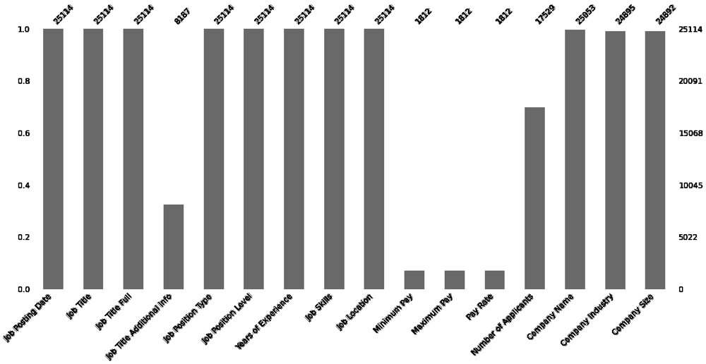

Exploring 25,000 job postings with Python
I built this notebook while revising the concepts I had learned on DataCamp.
The question
What does a large job-postings dataset contain, how complete is it, and which roles post the most openings?
- 25,114 job postings
- Inspect structure and nulls
- Missing-pay analysis
- Job title counts
What I did
- Loaded the dataset of 25,114 job postings and 16 columns into pandas, dropped the index columns, and inspected the structure.
- Measured missing data: counted nulls in every column and visualized them with the missingno library.
- Quantified the pay gap: calculated how many postings do not list a minimum or maximum pay, and charted it.
- Counted postings by job title and plotted the most common roles.
Results
- About 93% of postings (23,302 of 25,114) do not list a minimum or maximum pay, so salary analysis on this dataset would rest on only 1,812 postings.
- The most common job titles were Software Engineer (8,112 postings), Data Engineer (3,462), Business Analyst (2,009), Data Scientist (1,999), Developer (1,502), and Data Analyst (1,485).

Tools
- Python
- pandas
- NumPy
- Matplotlib
- seaborn
- missingno
Skills shown
- Data inspection
- Missing-data analysis
- Aggregation with value counts
- Data visualization
Code preview
Measuring missing pay data and counting job titles
job_postings = pd.read_csv("job_postings.csv")
job_postings = job_postings.drop(['Unnamed: 0', 'Job Posting ID'], axis=1)
job_postings.isnull().sum() # null values in each column
count_nan_min = len(job_postings) - job_postings['Minimum Pay'].count()
percent_missing_min = count_nan_min / len(job_postings) * 100 # 92.78
title_count = job_postings['Job Title'].value_counts().head(5)Excerpts from the original file, reformatted for readability. View the full notebook on GitHub.